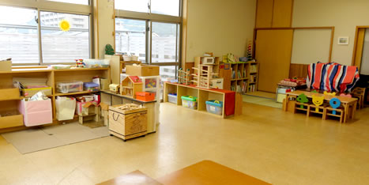
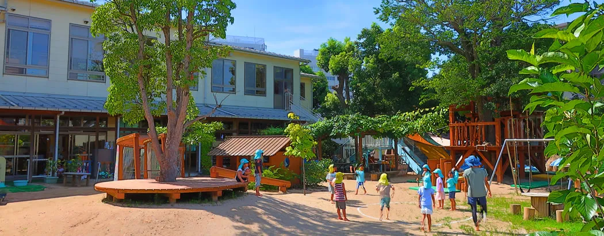
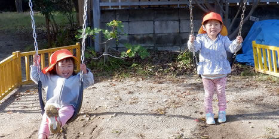

あそび
主体的にあそぶ
自分で選び、試し、友だちと関わる。遊びの積み重ねから、豊かな感性や創造性を育みます。
愛真幼稚園は、一世紀にわたってキリスト教主義の保育を実践してきました。神さまに愛されている一人ひとりが、遊びや自然との出会いを通して、豊かな感性と健やかな人格を育みます。

「あそびの保育」を土台に、豊かな感性・創造性・社会性・観察力を育てます。

自分で選び、試し、友だちと関わる。遊びの積み重ねから、豊かな感性や創造性を育みます。
園庭や鳥取の豊かな自然のなかで、いのちの不思議や季節の変化に出会います。

神さまに愛されているかけがえのない人格として、互いを認め、共に生きる喜びを育みます。
子どもたちの小さな発見や、季節の出来事を、写真とことばでお届けします。